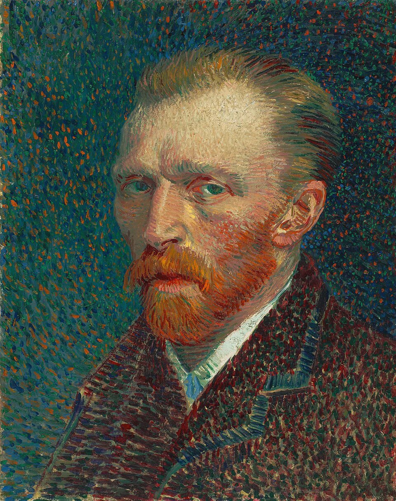
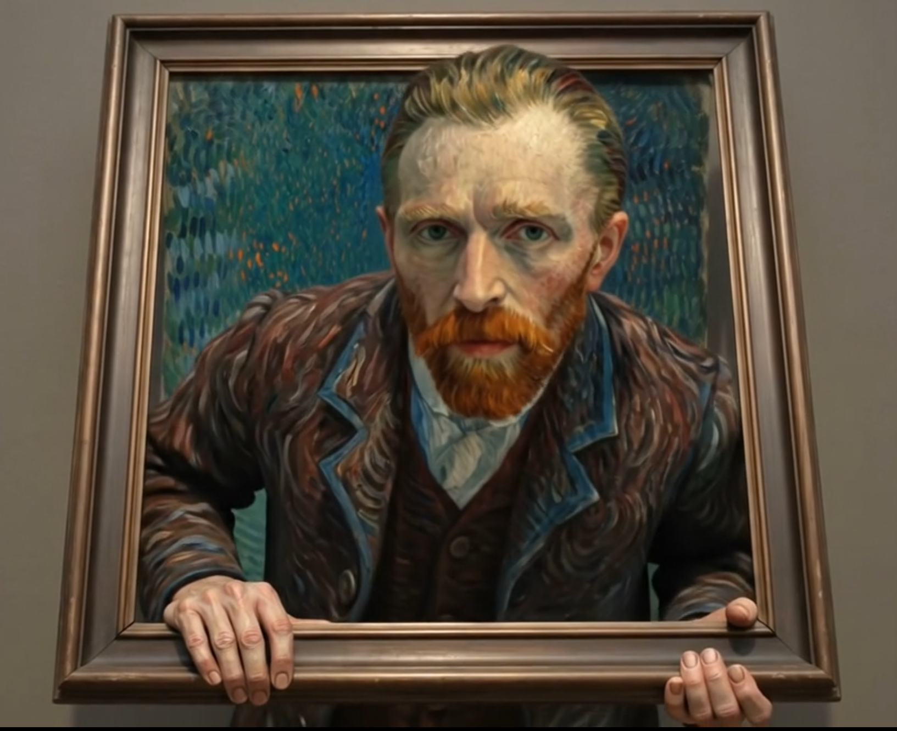

Double page 002 - Post-impressionnisme

Notice de catalogue
Autoportrait
Vincent van Gogh
Un visage construit par la couleur en mouvement
Van Gogh ne se contente pas de reproduire son apparence : chaque touche directionnelle transforme la couleur, le geste et le regard direct en affirmation d'une identité artistique.
Contexte historique
Van Gogh peint cet autoportrait pendant ses années parisiennes, lorsqu'il découvre l'impressionnisme, le néo-impressionnisme, les estampes japonaises et les théories modernes de la couleur. Le portrait se construit par énergie plus que par fini académique.
Biographie de l'artiste
Vincent van Gogh utilise l'autoportrait par nécessité autant que par expérimentation. Ne pouvant pas souvent payer des modèles, il observe son propre visage et transforme cette contrainte en journal visuel intense.
Palette de couleurs
Le portrait vibre par contrastes complémentaires : cheveux et barbe rouge-orange face à un environnement bleu-vert, avec des marques jaunes, roses, turquoise et brun-violet dans la surface.
Touche picturale
Des touches courtes et directionnelles construisent le visage, la veste et le fond. Elles ne décrivent pas seulement les formes : elles donnent à l'image une tension alerte et psychologique.
Composition
La tête est tournée en trois quarts tandis que le regard rencontre directement le spectateur. La veste sombre stabilise le bas de l'image, alors que le fond actif pousse autour de la figure.
Regarder de près
- Suivez le changement de direction des touches autour du front, de la joue et de la barbe.
- Comparez la barbe rouge-orange avec le fond bleu-vert.
- Observez comment le fond paraît actif plutôt que vide.
Un visage devenu laboratoire artistique
Van Gogh peint environ 35 à 36 autoportraits, presque tous entre 1886 et 1889, dont plus de vingt pendant son séjour parisien. Regardés ensemble, ils composent un journal visuel condensé : les premières études sombres cèdent la place aux couleurs de l'impressionnisme et du néo-impressionnisme, à une touche de plus en plus affirmée, à la revendication de son identité professionnelle, puis aux images plus tourmentées et introspectives d'Arles et de Saint-Rémy. L'autoportrait de 1887 appartient au moment décisif où son propre visage devient le terrain d'essai d'un style moderne.
Regarder de près
Suivez d'abord la direction des touches avant de lire le visage comme une ressemblance. Chaque marque décrit à la fois la forme et une tension intérieure.
- 1Le regard direct. Les yeux interrompent la surface tourbillonnante et retiennent le spectateur.
- 2La couleur complémentaire. La barbe rouge-orangé vibre contre les tons bleu-vert.
- 3Un fond actif. Les marques répétées transforment l'espace vide en atmosphère chargée.
- 4La veste sombre. Son poids stabilise le bas de l'image sans interrompre le rythme des touches.
- 5Des touches qui suivent la forme. Elles tournent autour du front, de la tempe et de la joue sans cacher la main du peintre.
Chronologie
- 1853 Van Gogh naît à Zundert, aux Pays-Bas.
- 1886 Il s'installe à Paris et étudie la couleur moderne.
- 1887 Il peint de nombreux autoportraits expérimentaux.
- 1888 Il quitte Paris pour Arles, où sa couleur s'intensifie encore.
- 1889 Après les autoportraits à l'oreille bandée, ses dernières images de Saint-Rémy deviennent plus tourmentées et introspectives.
Interprétations numériques


Les personnes derrière le peintre
Jo van Gogh-Bonger : construire l'héritage de Vincent
Après la mort de Vincent en 1890 puis celle de Theo en 1891, Jo hérite de centaines de tableaux et dessins ainsi que de la correspondance des deux frères. Elle ne se contente pas de les conserver : elle prête des œuvres, organise des ventes choisies, tisse des liens avec critiques et collectionneurs, et maintient un noyau essentiel de la collection.
Son exposition de 1905 au Stedelijk Museum d'Amsterdam réunit 472 œuvres. En 1914, elle publie en trois volumes les lettres de Vincent à Theo, donnant accès à sa pensée artistique dans ses propres mots. Ce travail durable fut décisif pour la reconnaissance internationale de Van Gogh.
Scannez la photographie de Jo. La couche AR affiche son modèle 3D disponible au-dessus de l'image, joue une courte introduction musicale, puis lance la narration française.